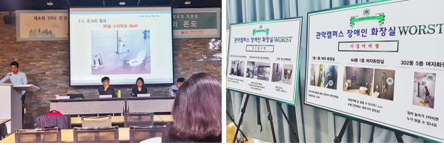

BF : 장애물 없는 생활환경
제6회 SNU 인권주간을 맞아 교내 곳곳에서 다양한 행사가 진행되는 가운데, 지난 2일 CJ국제관 세미나실에서는 ‘2018 장애인 이동환경 실태조사 결과발표와 토론회’가 열렸다. 인권센터의 주도로 교내 장애인권동아리 턴투에이블 및 학내 자원 활동가들에 의해 두 차례에 걸쳐(1차 2018년 1월~2월, 2차 2018년 7월~9월) 진행된 ‘관악캠퍼스 내 장애인 전용 화장실 실태조사’의 결과 발표가 이루어졌다.
이번 조사는 관악캠퍼스 소재 131개 건물 내 장애인이 사용 가능한 화장실 전부를 대상으로 했으며, 진입편의성, 세면대 및 변기 등의 시설적합성, 출입문 통로 면적 및 안전바 위치 등의 내부공간적합성 등의 조사 기준을 자체적으로 마련해 진행되었다. 2차 조사의 팀장으로 참여해 발표를 맡은 백승훈 씨(국제대학원 석사과정)는 “서울대의 장애인 화장실은 장애 학생들이 이용하기에 불편하고 충분하지 않다”는 결론을 밝히며 구체적인 사례를 제시했다. 실제 조사결과 표에 따르면, 2000년대 이전에 지어진 오래된 건물 외에도 여러 건물의 장애인 화장실 시설이 배리어 프리 기준에 미치지 못한다. 비교적 최근인 2015년에 개관한 관정도서관 역시 장애인 사용적합성이 높은 화장실은 1층 여자 화장실뿐이며, 2층 화장실 자동문의 경우 반투명 유리로 내부가 비치는 문제가 있다. 백승훈 씨는 “설계부터 잘못된 화장실은 비용적인 면에서 어렵더라도, 안전바 흔들림이나 적재물에 의한 이용 불편은 쉽게 개선할 수 있을 것”임을 지적했다.

조사결과에 따르면, 장애인 화장실이 샴푸와 같은 청소 노동자의 사적 물품으로 채워진 경우가 있었다. 이어진 토론에서 김원영 변호사(법과대학 박사과정)는 이에 대해 “오줌권의 최소보장을 위한 장애인 화장실은 규범적인 관점에서 벗어나서 보면, 대부분 비워져있다는 점에서 존재 자체가 매우 놀라운 공간이다. 이러한 공간이 가능한 점에는 청소노동자의 휴게공간으로 활용될 수 있다는 일종의 타협이 있었을지도 모른다”며 장애인 화장실에 대한 논의를 더 확장해 볼 필요가 있음을 설명했다.
발표회 이후 계획에 대해서, 실태조사를 총괄한 인권센터 김인희 전문위원은 “인권센터는 시설을 직접 고칠 수는 없지만, 권고의 기능을 가지고 있다”며 “결과보고서 작성 이후 본부와 시설관리국에 꾸준히 개선을 요구할 것”이라고 밝혔다. 또한 “보고서를 시각화하는 등 많은 학생과 조사결과를 공유”하는 정보 제공의 장도 마련할 것임을 알렸다.
참고영상